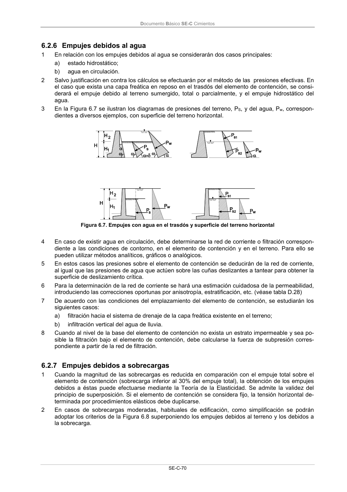
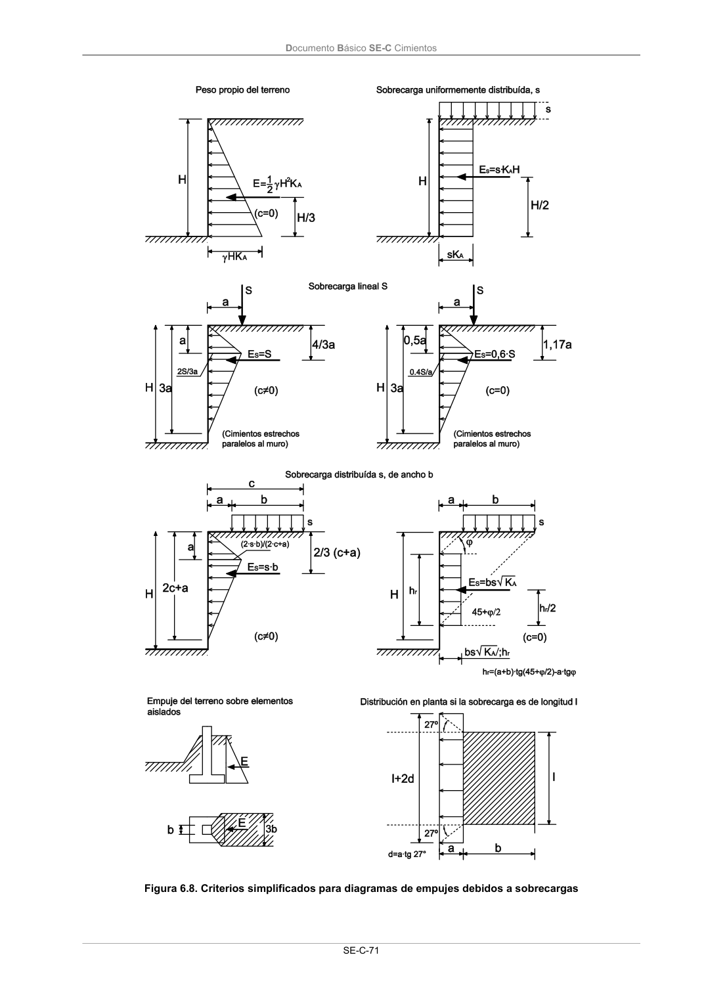

DB-SE-C · 6.2.7 Empujes debidos a sobrecargas · versión 2019-12-20 · capa oficial
Formatos: JSON compacto · Markdown · PDF fuente
Ámbito del documento · texto del ámbito · documento y tablas
ID técnico a0159 · PDF pág. 75-77 · jerarquía no validada por persona · contrastado con el literal de la página 75 (candidato tipográfico); no validado por persona · padre: raíz
6.2.7 Empujes debidos a sobrecargas 1 Cuando la magnitud de las sobrecargas es reducida en comparación con el empuje total sobre el elemento de contención (sobrecarga inferior al 30% del empuje total), la obtención de los empujes debidos a éstas puede efectuarse mediante la Teoría de la Elasticidad. Se admite la validez del principio de superposición. Si el elemento de contención se considera fijo, la tensión horizontal de- terminada por procedimientos elásticos debe duplicarse. 2 En casos de sobrecargas moderadas, habituales de edificación, como simplificación se podrán adoptar los criterios de la Figura 6.8 superponiendo los empujes debidos al terreno y los debidos a la sobrecarga. Documento Básico SE-C Cimientos SE-C-71 Figura 6.8. Criterios simplificados para diagramas de empujes debidos a sobrecargas Documento Básico SE-C Cimientos SE-C-72 3 Para sobrecargas elevadas deben emplearse métodos de análisis basados en la definición de su- perficies de rotura o métodos numéricos que consideren el comportamiento no lineal del problema. 6.3


PDF fuente redistribuible: copia fiel enlazada en esta página (SHA256 verificado).